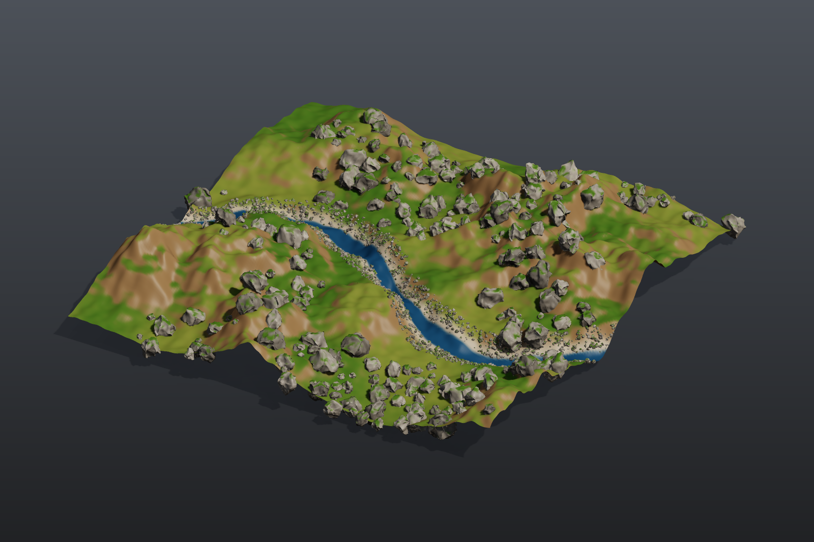

Rock garden#
Pure procedural modelling with geometry (SOP) nodes and no model files: a library of eight different rocks built by a For-Each loop, a terrain with a small stream, weighted scattering of boulders and pebbles, per-variant copying, moss, and output as a preview image, a 3D viewport and a glb file.

Load it#
Drag example_workflows/pcg_sop_rock_garden.json onto the ComfyUI canvas and press Queue. Only comfyui_pcg nodes plus ComfyUI's Preview Image are used.
Step by step#
1. Rock library (first column)
- Sphere (PCG) (radius 1, 12 x 8) is the start shape.
- For-Each Begin (PCG) (By Count, 8 iterations, Fetch Input) runs the body eight times on the same sphere.
- Point Jitter (PCG) (scale 0.55) and later Attribute Noise (PCG) have their
rand_seedwired toiteration, so the same chain produces eight differently shaped rocks. In between, Transform (PCG) squashes the rock (sy 0.7), Subdivide (PCG) (depth 2) smooths it and Normal (PCG) gives it normals; the Attribute Noise then cuts pits along the normal (Worley F2-F1, amplitude 0.12). - Match Size (PCG) puts each rock's base on y = 0 and buries it 0.15 deeper. For-Each End (PCG) merges the eight rocks.
- Connectivity (PCG) numbers the rocks into the primitive attribute
class(0 to 7); a Normal (PCG) finishes the rock library. PolyReduce (PCG) (keep 20%) makes a low-poly copy of the library for pebbles (an LOD).
2. Terrain (second column)
- Grid (PCG) (40 x 40, 240 x 240 points) with Attribute Noise (PCG) (terrain fractal, Y only, amplitude 2.5) is the ground.
- A Wrangle (PCG) digs a small stream: it computes
@dstream, the distance to a sine curve, and lowers the points near it. Normal (PCG) recomputes normals. - A second Wrangle colours by slope (grass on flat ground, soil on slopes, a gravel bank by the stream, water in it) and computes two weights:
boulder(flat ground, inside noise patches, away from the stream) andbank(the stream banks). - Attribute Promote (PCG) copies both weights to the faces, because the scatter groups are face groups. In the Group field you can then write
@boulder > 0.5directly.
3. Scatter and copy (third column)
- Scatter and Align (PCG) (group
@boulder > 0.5, 230 points) scatters boulders with random scale (0.3 to 1.3), random rotation, a tilt of up to 18 degrees and Avoid Overlap (pushed apart with Point Relax). - A Wrangle (PCG) picks a random rock per point:
i@class = floor(rand(@ptnum + 0.5) * 8). - Copy to Points (PCG) with Piece Attribute
classplaces, on each point, the rock whoseclassmatches: one node places all eight variants. - Pebbles follow the same pattern: Scatter and Align on
@bank > 0.3(2,600 points, small scale, tilt up to 40, no overlap avoidance), a random class per point, and Copy to Points from the low-poly library. - Merge (PCG) combines all rocks; a Wrangle gives each rock a grey tint per class and grows moss on faces that point up, inside a noise pattern.
4. Output (right column)
- Merge (PCG) joins terrain and rocks; Viewport (PCG) shows the 3D view, Geometry Preview (PCG) (1600 x 1066, Studio look) renders a picture, and Export Mesh (PCG) writes
pcg/rock_garden(glb).
Worth tweaking#
| Node | Parameter | Effect |
|---|---|---|
| For-Each Begin | iterations | Size of the rock library. Also change the * 8 in both Wrangles that pick a random rock. |
| Scatter and Align (big rocks) | count, scale_min, scale_max, tilt, rand_seed | Number, size and pose of the boulders. |
| Wrangle (colour + scatter weights) | code | Where boulders and pebbles may appear (the boulder and bank expressions). |
| Wrangle (stream) | code | Shape and depth of the stream. |
| Wrangle (rock colour + moss) | code | Rock tint and moss amount. |
See also#
- Tutorial 2: scatter and copy and Tutorial 4: for-each variations: the two building blocks of this graph.
- Groups:
@attributegroup patterns. - Loops and time: For-Each loops.
- Example index.